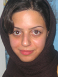

پذيرش > اخبار > اعتراض بیش از 550 تن از فعالان جنبش های اجتماعی و شخصیت های فرهنگی _ اجتماعی به (...)


 اعتراض بیش از 550 تن از فعالان جنبش های اجتماعی و شخصیت های فرهنگی _ اجتماعی به بازداشت زینب پیغمبرزاده اعتراض بیش از 550 تن از فعالان جنبش های اجتماعی و شخصیت های فرهنگی _ اجتماعی به بازداشت زینب پیغمبرزاده
24 اردیبهشت 1386 - - نسخه قابل چاپ
روز دوشنبه 17 اردیبهشت ماه زینب پیغمبرزاده، فعال حقوق زنان و خبرنگار صفحه زنان روزنامه سرمایه، مانند 32 زن دیگری که در 13 اسفند ماه 1385 دستگیر و با قرار کفالت یا وثیقه آزاد شده بودند، با در دست داشتن احضاریه کتبی (که روز 15 اردیبهشت ماه 1386 به وی ابلاغ شده بود) برای تفهیم اتهام به دادگاه انقلاب مراجعه کرد، اما ظاهرا به خاطر عدم مراجعه با احضار تلفنی و درخواست احضاریه کتبی، به رغم داشتن کفالت، برایش قرار وثیقه 20 میلیون تومانی صادر شد، ولی به جای تماس با خانواده اش برای اخذ وثیقه، بلافاصله او را به زندان اوین منتقل کردند.
اکنون زینب پیغمبرزاده در بند عمومی زندان اوین بسر می برد. در هفته اول بازداشت زینب، پدر و وکیل مدافع وی (نسیم غنوی) بارها به دادگاه مراجعه کردند اما از پذیرش وثیقه آزادی اش امتناع شد و حتا تقاضای پدر زینب برای ملاقات با وی و نیز ارسال لباس و داروهای قلبی اش به زندان بی پاسخ ماند. هم اکنون نیز هر بار به بهانه ای، از آزادی وی جلوگیری می شود.
زينب پيغمبرزاده، عضو کمیسیون زنان دفتر تحکیم وحدت و يكي از اعضاي كمپين يك ميليون امضا براي تغيير قوانين تبعیض آمیز است که پیش از این نیز در پاییز سال 1385 در حال جمعآوري امضا در مترو، دستگير و به مدت 5 روز در بازداشتگاه وزرا به سر برده است.
بازداشت زینب پیغمبرزاده پس از صدور قرار وثیقه، بدون هیچ توضیحی به خانواده وی در مورد چگونگی صدور قرار بازداشت از یک سو، و نیز امتناع دادگاه از پذیرش وثیقه در هفته اول بازداشت او (با وجود صدور این قرار از همان ابتدا)، و از سوی دیگر تهدید زینب و خانواده اش به خاطر درخواست احضاریه کتبی، جملگی از نقض قوانین و ضوابط آیین دادرسی در روند رسیدگی به پرونده زینب حکایت می کند.
از این رو ما امضاء کنندگان ضمن ابراز نگرانی شدید خود از وضعیت سلامتی زینب پیغمبرزاده در بند عمومی زندان اوین، خواستار آزادی فوری وی هستیم.
اسامی به ترتیب حروف الفبا (براساس نام کوچک):
آذر عباسي / آرزو ترکتاز / آرش بیژن زاده / آرش عاشوری نیا / آرش غفوري / آزاده پورزند / آزاده ثبوت / آزاده خسروشاهی / آسیه امینی / آناهید رمضی / آیدا قجر / آيدين اخوان / آیدین فرنگی / آینده آزاد / آيه حسني
ابراهيم مددي / ابوالفضل فلاح / ابوالقاسم ايراني / احترام شادفر / احسان صلح جو / احسان صيامي / احسان محبوب / احمد بروغنی / احمد تقوائی / احمد نجات / ارژنگ شکرلو/ ارشيا نوري / اسد شقاقي / اسد مذنبی / اسماعيل صادقي / اسماعیل خویی / اعظم ابطحی / افرا شکرلو / اقبال مهاجرانی / اقدس چرونده / اقدس مرعشی / الناز انصاری / الناز ناطقی / الهام قیطانچی / الهه امانی / الهه موسوی / امير اميرقلي / امير راعي فرد / امير منتظري / امير موسي كاظمي / امير يعقوبعلي / امید حبیبی نیا / امید معماریان / امیر عباس نخعی / امیر نیک پی / امیلی امرایی / امین احمدیان / امین آذربادگان / انور خامه اي / ايران باقري(آزاده) / ايرج كيا / اکبر عطری / ایمان ممبینی
بابک احمدی / بابك پاكزاد / بابک ابراهیمی / باقر عباسي / بتول پیشه ور / بلال مرادویسی / بهار نارنجی / بهاره میرزاحسین / بهاره بقایی / بهاره نوری / بهاره هدایت / بهجت حسینی / بهرام دزكي / بهروز خلیق / بهروز خوشباف / بهروز فدائی / بهروز گرانپایه / بهمن احمدی امویی / بهمن امینی / بهمن حميدي / بهمن نیرومند / بهناز مهرانی / بهنام دارايي زاده / بیژن اقدسی / بیژن مشاور
پرتو نوری اعلا / پرستو الهیاری / پرستو دوکوهکی / پروانه وحيدمنش / پروشات شکرلو / پروين جلايي / پرویز شوکت / پروین اردلان / پروین دارابی / پروین ضرابی / پروین کریم زاده / پریا نعمتی / پریسا احمدیان / پریسا اسودی / پریسا شیبانی / پریسا قنادان / پریسا کاکایی / پریسا کریمی / پریسا مرعشی / پریسا هاشمی / پریناز اتابکی / پژمان خرسند / پژمان رحیمی / پویا پویایی / پویان سرداری / پيام ابوطالبي / پيام روشنفكر / پیمان سپهری رهنما / پیمان ملاز
تارا ابدالی / تارا نجد احمدی / ترانه امیرتیموری / ترانه بنی یعقوب / ترانه راد / تهمینه عباسی فر
جادی میرمیرانی / جاويد جاويدان / جعفر پناهی / جلال ایجادی / جلوه جواهری / جواد لگزيان / جواد موسوی خوزستانی / جوانه جواهری
حجت منتظری / حجت نارنجی / حدیث جاودانی / حسن جعفری / حسن درويش پور / حسن زارع زاده اردشیر / حسن زهتاب / حسن فاضل کاشانی / حسن نيكبخت / حسين اكبري / حسين پوررضا / حسين حرداني / حسين سرحدي زاده / حسين فراستخواه / حسین جاوید / حسین شهرابی / حسین ورجاوند / حميد بي آزار / حميدرضا عسگري نژاد / حمید سرداری / حمید کوثری / حمیده ساعدی / حنیف یزدانی / حیدر برومند
خدیجه مقدم / خسرو باقري / خلیل امامی / خلیل مومنی
دارين داريوش / داریوش قلی زاده / داود محمدی / دلارام علی / دلبر توکلی
راحله عسگری زاده / رحيم صيامي / رضا شریفی / رضا صائمی / رضا عابد / رضا قاضی نوری / رضا مرادي اسپيلي / رضوان مقدم / رضوانه حقیری / رضي جعفرزاده / رکسانا ستایش / روجا بندری / روحی افسر / روزبه درنشان / روزبه كريمي زاده / روزبه میرابراهیمی / روزبه میرچرخچیان / روشنک زین العابدینی / روشنک قریشی / روشنک قیاسیان / رویا پاکزاد / رويا ديانت / رویا سلامتی / رویا صحرایی / رویا صفا / رویا طلوعی
زارا امجدیان / زری تبایی / زهرا ابراهيمي / زهرا بيگدلي / زهرا سرحدي زاده / زهرا صادقی / زهرا قنبری / زهره ارزنی / زهره صيامي / زیبا لاهیجی
ژيلا بشيري / ژیلا بنی یعقوب
ساچلی افلاکی / سارا اسمی زاده / سارا لقایی / سارا لقمانی / سارا محمدی / سارا کرمانیان / ساقی لقایی / سپيده قدرت / ستار اميني / ستاره سجادی / سجاد سالك / سجاد نیکنام / سحر ابونصر / سحر افاضلی / سحر رضا زاده / سحر سجادی / سحر مرانلو / سرور صاحبی / سعيد شعباني ركن وفا / سعيد نيكويي / سعید عباسپور / سعيده عليپور / سما بابایی / سمیرا صدری / سمیه حسینی / سمیه فرید / سهراب حسني / سهیل آصفی / سودابه سیرجانی / سوسن طهماسبی / سولماز شریف / سولماز صدقی / سيامك اميني / سيامك طاهري / سياوش سعادتيان / سيد افشين اميرشاهي / سيد علي صالحي / سيف الله اكبري / سيمين بهبهاني / سیاوش عبقری / سیده سمانه موسوی / سیما شاخساری / سیمین مرعشی / سینا مالکی
شاپور مزارعی / شادی صدر / شايا شهوق / شعله شاهرخی / شهرام آقامیر / شهرام شیدایی / شهرزاد ارشدی / شهرنوش پارسی پور / شهره موحدی / شهريار شمس / شهلا انتصاري / شهلا شفيق / شهلا عبقری / شهلا فرید / شهلا لاهیجی / شهلا محسنی / شهلا مومبینی / شیرین اردلان / شیرین سعیدی / شیرین عبادی / شیوا نظرآهاری
صادق فقيرزاده / صادق نوابي / صادق کار / صبا طاهريان / صدیقه کشاورز / صنم دولتشاهی
طلعت تقی نیا / طيبه اخوان مقدم
عارفه الیاسی / عاطفه یوسفی / عالمتاج شيرازي / عباس حسيني / عباس مخبر / عبداله عرفان طلب / عسل اخوان عسل مهربانی / عشرت قلی پور / عطا نهایی / عطيه وحيدمنش / عفت ماهباز / عفت محبوب / علي اميني / علي پير حسينلو / علي سنبلي / علي فايض پور / علي كلايي / عليرضا جباري / عليرضا كرماني / عليرضا كيواني نژاد / علی افشاری / علی اکبر خسروشاهی / علی اکبر موسوی / علی پورنقوی / علی صمد / علی عبدی / علی قلی زاده / علی مختاری / علی معظمی / علی نیکونسبتی / علی
وفقی / علیرضا شبانی شجاعی / عمار ملكي / عنایت همایی
غزال ملوان / غلامرضا حسينيان
ف. تابان / فائزه اثنی عشری / فاطمه الله وردی / فاطمه اميني / فاطمه دهدشتی نیا / فاطمه سرحدي زاده / فاطمه شاه نظری / فاطمه نجاتی / فتانه عباسی فر / فتانه فراهانی / فتانه کیان ارثی / فخری حسینی / فخری شادفر / فراز یکیتا / فرانک فرید / فرخ نعمت پور / فرزاد فرحبخش / فرزانه آقايي پور / فرزانه آیینی / فرزانه راجی / فرزانه طاهری / فرزين شيرزادي / فرشاد شعبانی / فرشته جودكي / فرشته مولوی / فرشته نورایی / فرشته هاشمی / فرشين كاظمي نيا / فرناز سیفی / فرنوش اميرشاهي / فرهاد توانا / فرهاد داودی / فرهاد فرجاد / فرهاد فرهادي / فرهاد محرابی / فرود سیاوش پور / فروزان آصف / فروغ صلح جو / فروغ قره داغی / فريبرز رييس دانا / فریبا اسدی / فریبا داودی مهاجر / فریبا محمدی / فرید مصلحیان / فرید هاشمی / فریده اسدی / فریده پورعبدال / فریده رستمی / فریده غائب / فریده فرهی
قاسم دهقان
کاظم شکری / کامبیز سلطانین / کاوه داد / کاوه مظفری / کاوه کرمانشاهی / كاظم طاهري / كاظم فرج الهي / كافيه عليمرادي / کیومرث حکیم / كيوان صميمي / كيوان مهرگان
گلبرگ باشی / گوهر شميراني / گيـلان نصيری / گیتا احمدی / گیسو جهانگیری
ليلا درخشان / لیلا اصلانی / لیلا انصاری / لیلا موری / لیلا نظری / لیلی پورزند / لیلی فرهادپور
مازيار سميعي / ماندانا چترچی/ مانی حکیم / مجتبی فتحی / مجيد تولّايي / مجيد مددي / مجيد ملكي / محبوبه حسین زاده / محبوبه محبی / محبوبه خوانساری / محبوبه عباسقلی زاده / محرم دولتشاهی / محسن اسدالهي / محسن حكيمي / محسن شمشيري / محسن فرجي / محسن مالجو / محمد آشور / محمد بهزادي / محمد حاجي زاده / محمد حسین مهرزاد / محمد رجبی / محمد رستمی / محمد رضوانيان / محمد رهبر / محمد زهرایی / محمد ملوان / محمد هاشمی / محمدرضا رحيمي راد / محمدرضا رضوی / محمدعلي بني حسن / محمدعلي عمويي / مراد ویسی / مرتضي قوامي / مرتضی صادقی / مرجان توحيدي / مرجان رحيمي / مرجان نمازی / مرضیه بخشی زاده / مرضیه حقانی / مريم افشار / مريم ايزي / مريم رضايي / مريم محبوب / مريم موسي پور / مریم افشاری / مریم حسین زاده / مریم سطوت / مریم عظیمی / مریم فرخی / مریم مالک / مریم میرزا / مریم نجاتی / مریم کسایی / مژگان تقی نیا / مژگان ملکیان / مسعود باستاني / مسعود رجايي / مسعود عاشوري / مسعود کاظمیان / مصطفي تنها / مصطفي طاهري / مصطفی رضیئی / ملیحه رزازان / منصور اسانلو / منصور بهكیش / منصور حيات غيبي / منصور درياباري / منصور قلي زاده / منصوره شجاعی / منصوره فتوره چی / منيژه گازراني / منیره کاظمی / مهدي تاجيك / مهدي فخرزاده / مهدی عربشاهی / مهدی مجتهدی/ مهرانگیز کار / مهرداد درویش پور / مهرداد میرشمس شهشهانی / مهرزاد غنی پور / مهسا شکرلو / مهسا مهرداد / مهشید پگاهی سینا / مهشید راستی / مهناز اقدمی / مهناز بدیهیان / مهناز محرابی / مهناز محمدی / مهین خدیوی / مونا محمدزاده / مونیکا دالبی / ميرمحمود يگانلي / مينا سري / میترا شجاعی / میرا قربانی فر / مینا ربیعی / مینا میرزاحسین
نادر اسدالهي / نادر حاج محسن / نادر ساده / ناهید موسوی / نازي اسكويي / ناصر اشجاري / ناصر زرافشان / ناصر نصرالهي / ناهيد صفايي / ناهید توسلی / ناهید جعفری / ناهید خیرابی / ناهید نصرت / ناهید کشاورز / ناهید میرحاج / نجف رحيمي / نجمه آجربندیان / نرگس سرداری / نرگس طیبات / نزهت حافظي / نسرين طاعتيان / نسرین اردلان / نسرین افضلی / نسرین بهنار / نسرین ستوده / نسرین صمدی / نسيم بني كمالي / نسیم سرابندی / نسیم عبدی دزفولی / نفيسه زارع كهن / نفیسه سعادتی / نگار انسان / نگار نهاوندی / نگين بهكام / نگین جهانگیری / نگین فیروزه ای / نورالدين پزشكي / نوشابه امیری / نوشین احمدی خراسانی / نوشین عابدی / نيلوفر رستمي / نیره توحیدی / نیلوفر انسان / نیلوفر گلکار / نیلوفر مهدیان / نیلوفر کشمیری / نیما قاسمی
هاجر حسین خواه / هادی عابدی / هاشم اكبرياني / هاله آگنج / هاله سلحشور / هانا دارابی / هدی توحیدی / هژیر پلاسچی / هستی خضروی / هلن وزیری / هما مداح / همت حافظي / هنگامه شهیدی
وجهیه خوش بین / وجیهه مقدم / وحید علیرضایی / وحیده مولایی / ولي رحيم زاده / وهاب انصاری / ویدا بیگلری / ویدا حاجبی / ویکتوریا آزاد
یاسر بهرامی / یاسمن تورنگ / یاسمن دادور / يداله نجفي / يوسف پژوم / يونس اورنگ خديوي
ارسال به
بالاترین
،
توییتر
،
فریندفید
،
فیسبوک
در همين بخش :
 پروین ذبیحی برنده جایزه حقوق بشری سازمان غيردولتى اتريشى سودويند شد پروین ذبیحی برنده جایزه حقوق بشری سازمان غيردولتى اتريشى سودويند شد
پخش کارت پستال و بروشور در روز جهانی زن در تهران
تمدید زمان برای امضای بیانیهی جمعی از فعالان زن به مناسبت هشت مارس
مجوزی که در نطفه خفه شد
بیش از 2000 امضا در اعتراض به تبعیض های آموزشی به مجلس تحویل داده شد
ديگر بخش ها :
طرح یک میلیون امضا
|
مقالات
|
سایت نوشته ها
|
اخبار
|
گزارش كمپين
|
گفت و گو
|
علیه سکوت
|
كوچه به كوچه
|
نامه های شما
|
گزارش ویژه
|
گفتگو با اعضا
|
ویژه سالگرد کمپین
|
تصویر برابری
|
دل آرام علی
|
تریبون
|
مقالات
|
تاریخ شفاهی
|
خارج از چارچوب
|
کتابخانه
|
درباره کمپین
|
کمپین در شهرها
|
کمپین در بند
|
صدای تغییر
|
ویژه 22 خرداد
|
لایحه حمایت از خانواده
|
گالری
|
عشا مومنی
|
امیر یعقوبعلی
|
خدیجه مقدم
|
راحله عسگری زاده و نسیم خسروی
|
پروین اردلان،جلوه جواهری، مریم حسین خواه، ناهید کشاورز
|
زینب پیغمبرزاده
|
سعیده امین، سارا ایمانیان، محبوبه حسین زاده، ناهید کشاورز و همایون نامی
|
احترام شادفر
|
نسیم سرابندی زاده،فاطمه دهدشتی
|
وبلاگ مهمان
|
پرونده خرم آباد
|
دستگیری ها
|
مریم مالک
|
پرستو اللهیاری
|
مهرنوش اعتمادی
|
سمیه رشیدی
|
Other Languages
|
همراهان
|
«فراخوان کمپین ده روز با بهاره هدایت»
| English
|